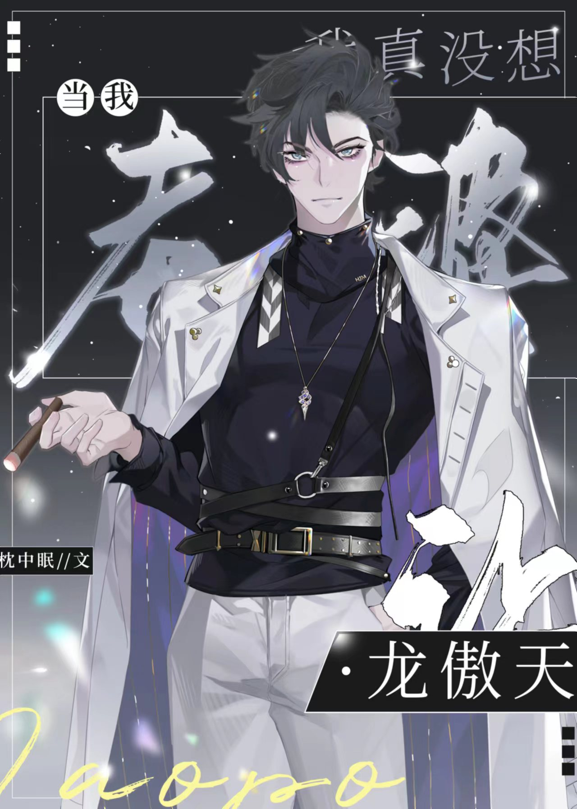

En la novela había un tipo de personaje, aquellos que comenzaron en el infierno pero llegaron hasta la cima, abrazando bellezas y alcanzando la cima. Eran conocidos como Long Aotian.
Sin un maestro que les impartiera su sabiduría, unos hermanitos leales y unos mensajeros diligentes, no habrían sobrevivido.
Para garantizar el funcionamiento del pequeño mundo que estaba a punto de colapsar, Jian Yuanbai tuvo que desempeñar estos roles.
Jian Yuanbai: Es decir, mientras Long Aotian pueda tener éxito al final, todo estará bien, ¿verdad?
Sistema:… Así es, pero el presentador debe recordar que el protagonista masculino diga las líneas de Long Aotian en el momento adecuado.
En cada mundo, Jian Yuanbai completó sus tareas excepcionalmente bien. Lo único que rompió el corazón del sistema fue...
Sistema: ¡Long Aotian debería estar rodeado de admiradores! ¡No te conviertas en tu esposa!
Jian Yuanbai, a quien ya le habían lavado el cerebro las líneas chuunibyou: Ni siquiera el cielo y la tierra pueden ir en contra de mi voluntad, y mucho menos solo tú.
De hecho, Jian Yuanbai inicialmente quería seguir la trama honestamente, pero en medio de las constantes afirmaciones de "GeGe" de Long Aotian, gradualmente se perdió, lleno de sueños apasionados noche tras noche.
Jian Yuanbai: Todavía soy virgen y mi cuerpo está reservado para mi esposa. Ya no soy puro, así que tengo que hacerle asumir la responsabilidad.
El sistema colapsó, se volvió loco y se puso completamente furioso: eso fue solo un maldito sueño. ¡Aún eres pura!
Jian Yuanbai miró al suave y blanco Long Aotian, con una expresión profunda y decidida, e insistió: No, ya no soy puro.
Luego, cambió el método de cultivo musculoso de dos metros y medio de altura por otro. No es que no le gustara ser fuerte, sino que prefería una esposa más amable.
MINI TEATRO:
De hecho, Jian Yuanbai se sintió bastante culpable por dentro.
Long Aotian de la novela dice: Siete veces por noche, alegría todas las noches.
Después de convertirse en su esposa: Se desmayó tres veces en una noche.
Jian Yuanbai se culpó a sí mismo: solo hice que mi esposa se desmayara tres veces y todavía quedan cuatro más. Lo siento por mi esposa, pero haré lo mejor que pueda.
Long Aotian se burló:… ¡Siete veces en una noche y terminarás sin esposa!
Mundo Uno: La pobre pequeña pieza de ajedrez abandonada por la Familia Aristocrática
Frente a su despiadada familia que lo echó de la casa y quería verlo luchar por sobrevivir,
Las pestañas de Long Aotian temblaron y reprimió la vergüenza, diciendo: "¡La desgracia de hoy, la pagaré cien veces!".
El objetivo no se logró y, en cambio, vieron a Long Aotian ser vigorosamente cultivado y adorado por la familia Jian más rica. El extremadamente cariñoso miembro de la familia dijo: …Qué manera más complicada de presumir.
Mundo dos: el pobre perdedor cuyo compromiso fue roto
Las orejas de Long Aotian estaban rojas y sus ojos húmedos miraron a Jian Yuanbai suplicando piedad.
Jian Yuanbai: "Diga rápido".
Long Aotian: "¡Treinta años al este del río, treinta años en el oeste, Mo intimidando a los pobres!" (三十年河东，三十年河西 es un proverbio, lo que significa que hace treinta años el buen Feng Shui estaba en el lado este del río, pero treinta años después estaba en el lado oeste del río. Más tarde, se convirtió en una metáfora de que los asuntos mundiales o el destino de las personas están siempre en constante cambio y no hay un número fijo de ascensos, caídas, honores y desgracias).
Antes de que pudieran humillar a Long Aotian, fueron reprimidos por Jian Yuanbai. Vomitaron sangre y cayeron al suelo.
Villanos: …Devuélvenos nuestras líneas.
Mundo Tres: El pobre pequeño vampiro que se transformó
Cuarto Mundo: El pobre pequeño Alfa con glándulas dañadas
Quinto Mundo: El pobre actor que se escondió en la nieve
Mundo Seis, Siete, Ocho...